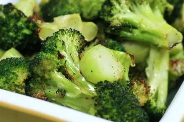

Roasted Broccoli
Ingredients
- 14 ounces broccoli
- 1 tablespoon olive oil
- salt and ground black pepper to taste
- Step 1- Preheat the oven to 400 degrees F (200 degrees C).
- Step 2- Cut broccoli florets from the stalk. Peel the stalk and slice into 1/4-inch slices.
Mix florets and stem pieces with olive oil in a bowl and transfer to a baking
sheet; season with salt and pepper.
- Step 3- Roast in the preheated oven until broccoli is tender and lightly browned, about
18 to 20 minutes.